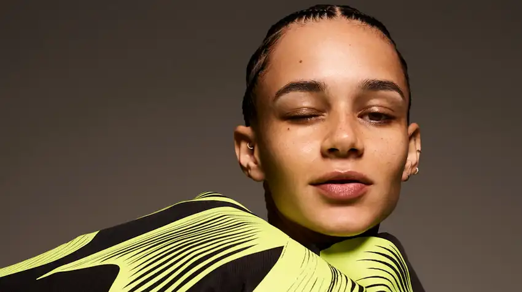
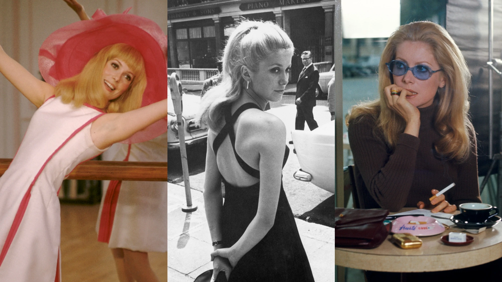
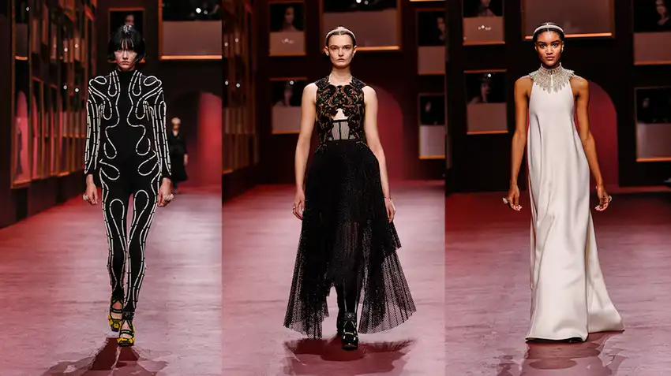
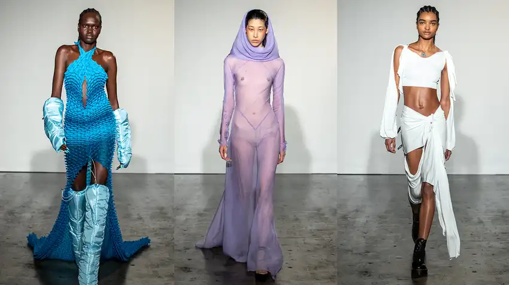
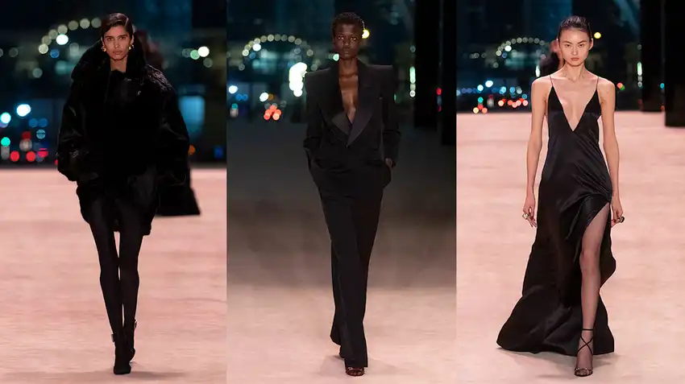

Hunter Schafer and Kendall Jenner just walked Prada's standout AW22 show
By celebrating Prada’s past and present, and channeling an extravagantly feminist spirit, Miuccia Prada and Raf Simons put out their best collection yet.

Gucci’s Adidas collaboration is here
The new collection was presented in the house's latest show, a kaleidoscopic survey of kitsch-y vintage and what we now know as Indie Sleaze.

Nicolas Di Felice is continuing Courrèges libertine legacy
The Belgian designer discusses his sexy, cut-out filled SS22 collection and bringing back wearability to fashion.

How that Miu Miu skirt became a meme
We spoke to the 17-year-old founder of the Instagram account dedicated to the omnipresent SS22 set.

The new A-COLD-WALL* and Dr Martens collab is here
Fashion stalwart Samuel Ross and the British heritage mainstay unpack the creation of their new silhouette.

The best of Paris Fashion Week AW22: Botter and Vaquera
Our must-read guide to the key shows of the season — as they happen.

Rei Kawakubo on hunger and power in fashion
As Binx Walton is shot in all Comme des Garçons, fashion's ultimate provocateur speaks to her work's relationship with the body.

7 of Catherine Deneuve’s most iconic outfits
One of the 60s foremost style icons, the French actress was a muse to Yves Saint Laurent and David Bailey.
Paloma Elsesser: "I'm not wearing a stretchy dress. I'm wearing Miu Miu"
The supermodel sat down with Ericka Hart to discuss social media and being used by the fashion industry.

Dior just got a high-tech makeover for AW22
Maria Grazia Chiuri offered extreme protection through inflatable airbags, supportive ankle straps and temperature-controlled Bar jackets.

Fashion East AW22: off kilter elegance and a spiritual awakening
This season's design trio; Jawara Alleyne, Chet Lo and Maximilian; presented their most audacious work yet.
